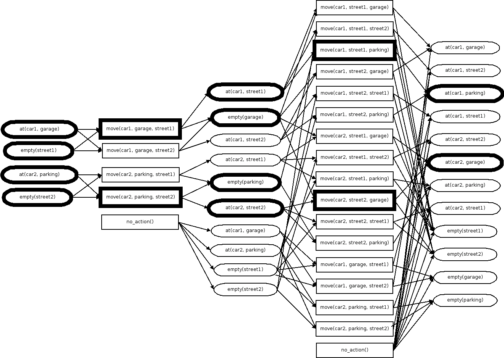

there may be partial observability (that is, the state of the system may not be fully known)
agent properties:
some information may be unknown
plans are hierarchical (high level to low level parts)
In planning we represent the world in belief states, in which multiple states are possible (because of incomplete information, we are not certain what the true state of the world is). Actions that are taken can either increase or decrease the possible states, in some cases down to one state.
Sequences of actions can be defined as trees, where each branch is an action and each node is a state or is an observation of the world. Then we search this tree for a plan which will satisfy the goal.
Broadly within planning, there are two kinds:
domain-specific planning, in which the representations and techniques are tailored for a particular problem (e.g. path and motion planning, perception planning, manipulation planning, communication planning)
domain-independent planning, in which generic representations and techniques are used
The field of planning includes many areas of research and different techniques:
Domain modeling (HTN, SIPE)
Domain description (PDDL, NIST PSL)
Domain analysis (TIMS)
Search methods (Heuristics, A*)
Graph planning algorithms (GraphPlan)
Partial-order planning (Nonlin, UCPOP)
Hierarchical planning (NOAH, Nonlin, O-Plan)
Refinement planning (Kambhampati)
Opportunistic search (OPM)
Constraint satisfaction (CSP, OR, TMMS)
Optimization method (NN, GA, ant colony optimization)
Issue/flaw handling (O-Plan)
Plan analysis (NOAH, Critics)
Plan simulation (QinetiQ)
Plan qualitative modeling (Excalibur)
Plan repair (O-Plan)
Re-planning (O-Plan)
Plan monitoring (O-Plan, IPEM)
Plan generalization (Macrops, EBL)
Case-based planning (CHEF, PRODIGY)
Plan learning (SOAR, PRODIGY)
User interfaces (SIPE, O-Plan)
Plan advice (SRI/Myers)
Mixed-initiative plans (TRIPS/TRAINS)
Planning web services (O-Plan, SHOP2)
Plan sharing & comms (I-X, I-N-C-A)
An example planning problem
Planning approaches are often presented on toy problems, which can be quite different from real-world problems. Namely, toy problems have a concise and exact description, but real-world problems seldom, if ever, have an agreed-upon or unambiguous description. They also have important consequences, whereas toy problems do not. But toy problems provide a standard way of comparing approaches.
Some example toy problems:
the farmers, wolves, and the river
the sliding-block puzzle
the $n$-queens problem
the Dock-Worker Robots (DWR) domain (i.e. the container/block stacking problem)
For the following notes on planning, we will use the Dock-Worker Robots problem as an toy problem:
we have some containers
we have some locations, connected by paths
containers can be stacked onto pallets (no limit to the height of these stacks)
we have robots (vehicles) that can have a container loaded onto them
each location can only have one robot at a time
we have cranes which can pick up and stack containers (one at a time)
The available actions are:
move robot $r$ from location $l$ to some adjacent and unoccupied location $l'$
take container $c$ with empty crane $k$ from the top of pile $p$, all located at the same location $l$
put down container $c$ held by crane $k$ on top of pile $p$, all located at location $l$
load container $c$ held by crane $k$ onto unloaded robot $r$, all located at location $l$
unload container $c$ with empty crane $k$ from loaded robot $r$, all located at location $l$
State-space planning vs plan-space (partial-order) planning
There are two main approaches to planning: state-space planning and plan-space planning, sometimes called partial-order planning.
state-space planning
finite search space
explicit representation of intermediate states
commits to specific action orderings
causal structure only implicit
search nodes relatively simple and successors are easy to compute
not great at handling goal interactions
plan-space planning
infinite search space
no explicit intermediate states
choice of actions and order are independent (no commitment to a particular ordering)
explicit representation of rationale
search nodes are complex and successors are expensive to compute
Nowadays with efficient heuristics, state-space planning is the more efficient way for finding solutions.
State-space planning
With state-space planning, we generate plans by searching through state space.
Representing plans and systems
We can use a state-transition system as a conceptual model for planning. Such a system is described by a 4-tuple $\Sigma = (S,A,E,\gamma)$, where:
$S = \{s_1, s_2, \dots \}$ is a finite or recursively enumerable set of states
$A = \{a_1, a_2, \dots \}$ is a finite or recursively enumerable set of actions
$E = \{e_1, e_2, \dots \}$ is a finite or recursively enumerable set of events
$\gamma: S \times (A \cup E) \to 2^S$ is a state transition function (note $2^S$ is the power set of all states, that is an element of the set is itself a set of world states)
If $a \in A$ and $\gamma(s,a) \neq \emptyset$, then $a$ is applicable in $s$. Applying $a$ in $s$ will take the system to $s' \in \gamma(s,a)$.
We can also represent such a state-transition system as a directed labelled graph $G=(N_G, E_G)$, where:
the nodes correspond to the states in $S$, i.e. $N_G = S$
there is an arc from $s \in N_G$ to $s' \in N_G$, i.e. $s \to s' \in E_G$, with label $u \in (A \cup E)$ if and only if $s' \in \gamma(s,u)$.
A plan is a structure that gives us appropriate actions to apply in order to achieve some objective when starting from a given state.
The objective can be:
a goal state$s_g$ or a set of goal states $S_g$
to satisfy some conditions over the sequence of states
to optimize a utility function attached to states
a task to be performed
A permutation of a solution (a plan) is a case in which some actions in the path to the solution can have their order changed without affecting the success of the path (that is, the permuted path still leads to the solution with the same cost). In this case, the actions are said to be independent.
Generally we have a planner which generates a plan and the passes the plan to a controller which executes the actions in the plan. The execution of the action then changes the state of the system. The system, however, changes not only via the controller's actions but also through external events. So the controller must observe the system using an observation function $\eta: S \to O$ and generate the appropriate action.
Sometimes, however, there may be parts of the system which we cannot observe, so, given the observations that could be collected, there may be many possible states of the world - this is the belief state of the controller.
The system as it actually is is often different from how it was described to the planner (as $\Sigma$, which, as an abstraction, loses some details). In dynamic planning, planning and execution are more closely linked to compensate for this scenario (which is more the rule than the exception). That is the controller must supervise the plan, i.e. it must detect when observations differ from expected results. The controller can pass this information to the planner as an execution status, and then the planner can revise its plan to take into account the new state.
STRIPS (Stanford Research Institute Problem Solver)
The STRIPS representation gives us an internal structure to our states, which up until now have been left as black boxes. It is based on first order predicate logic; that is, we have objects in our domain, represented by symbols and grouped according to type, and these objects are related (such relationships are known as predicates) to each other in some way.
For example, in the Dock-Worker Robot domain, one type of object is robot and each robot would be represented with a unique symbol, e.g. robot1, robot2, etc.
We must specify all of this in a syntax that the planner can understand. The most common syntax is PDDL (Planning Domain Definition Language). For example:
(define (domain dock-worker-robot))
(:requirements :strips :typing)
(:types
location ;there are several connected locations
pile ;is attached to a location,
;it holds a pallet and a stack of containers
robot ;holds at most 1 container,
;only 1 robot per location
crane ;belongs to a location to pickup containers
container
)
(:predicates
(adjacent ?l1 ?l2 - location) ;location ?l1 is adjacent to ?l2
(attached ?p - pile ?l - location) ;pile ?p attached to location ?l
(belong ?k - crane ?l - location) ;crane ?k belongs to location ?l
(at ?r - robot ?l - location) ;robot ?r is at location ?l
(occupied ?l - location) ;there is a robot at location ?l
(loaded ?r - robot ?c - container) ;robot ?r is loaded with container ?c
(unloaded ?r - robot) ;robot ?r is empty
(holding ?k - crane ?c - container) ;crane ?k is holding a container ?c
(empty ?k - crane) ;crane ?k is empty
(in ?c - container ?p - pile) ;container ?c is within pile ?p
(top ?c - container ?p - pile) ;container ?c on top of pile ?p
(on ?c1 ?c2 - container) ;container ?c1 is on container ?c2
)
)
Let $\mathcal{L}$ be a first-order language with finitely many predicate symbols, finitely many constant symbols, and no function symbols (e.g. as defined with PDDL above).
A state in a STRIPS planning domain is a set of ground atoms of $\mathcal{L}$. An atom is a predicate with an appropriate number of objects (e.g. those we defined above). An atom is ground if all its objects are real objects (rather than variables).
(ground) atom $p$holds in state $s$ if and only if $p \in s$ (this is the closed world assumption); i.e. it is "true"
$s$ satisfies a set of (ground) literals (a literal is an atom that is either positive or negative, e.g. an atom or a negated atom) $g$ (denoted $s \vDash g$) if:
every positive literal in $g$ is in $s$
every negative literal in $g$ is not in $s$
Say we have the symbols loc1, loc2, p1, p2, crane1, r1, c1, c2, c3, pallet. An example state for the DWR problem:
In STRIPS, a planning operator is a triple $o = \text{name}(o), \text{precond}(o), \text{effects}(o)$, where:
the name of the operator $\text{name}(o)$ is a syntactic expression of the form $n(x_1, \dots, x_k)$ where $n$ is a unique symbol and $x_1, \dots, x_k$ are all variables that appear in $o$ (i.e. it is a function signature)
the preconditions $\text{precond}(o)$ and the effects $\text{effects(o)}$ of the operator are sets of literals (i.e. positive or negative atoms)
the positive effects form the add list
the negative effects form the delete list
An action in STRIPS is a ground instance of a planning operator (that is, we substitute the variables for symbols, e.g. we are "calling" the operator, as in a function).
For example, we may have an operator named move(r,l,m) with the preconditions adjacent(l,m), at(r,l), !occupied(m) and the effects at(r,m), occupied(m), !occupied(l), !at(r,l). An action might be move(robot1, loc1, loc2), since we are specifying specific instances to operate on.
This is a bit confusing because PDDL does not distinguish "action" from "operator".
Other representations
Representations other than STRIPS includes:
propositional reprsentation:
world state is a set of propositions (i.e. only symbols, no variables)
actions consist of precondition propositions, propositions to be added and removed (i.e. there are no operators b/c we only have symbols)
so the STRIPS representation is essentially propositional representation but with first-order literals instead of propositions (i.e. the preconditions of an operator can be positive or negative)
state-variable representation:
state is a tuple of state variables $\{x_1, \dots, x_n\}$
an action is a partial function over states
These representations, however, can all be translated between each other.
Applicability and state transitions
When is an action applicable in a state?
Let $L$ be the set of literals. $L^+$ is the set of atoms that are positive literals in $L$ and $L^-$ is the set of all atoms whose negations are in $L$.
Let $a$ be an action and $s$ a state. $a$ is applicable in $s$ if and only if:
$\text{precond}^+(a) \subseteq s$
$\text{precond}^-(a) \cap s = \emptyset$
Which just says all positive preconditions must be true in the current state, and all negative preconditions must be false in the state.
The state transition function $\gamma$ for an applicable action $a$ in state $s$ is defined as:
$$
\gamma(s,a) = (s - \text{effects}^-(a)) \cup \text{effects}^+(a)
$$
That is, we apply the delete list (remove those effects from the state) and apply the add list (add those effects to the state).
Finding actions applicable for a given state is a non-trivial problem, in particular because there may be many, many available actions.
We can define an algorithm which will find the applicable actions for a given operator in a given state:
initialize:
A is a set of actions, initially empty
op is the operator
precs is the list of remaining preconditions to be satisfied
v is the substitutions for the variables of the operator
s is the given state
function addApplicables(A, op, precs, v, s)
if no positive preconditions remaining
for every negative precondition np in s
if the state falsifies the np, return
add v(op) to A
else:
select the next positive precondition pp
for each proposition sp in s
extend 'v' such that pp and sp match, the result is v'
if v' is valid, then:
addApplicables(A, op, (precs - pp), v', s)
We can formally define a planning domain in STRIPS.
Given our function-free first-order language $\mathcal{L}$, a STRIPS planning domain on $\mathcal{L}$ is a restricted (meaning there are no events) state-transition system $\Sigma = (S, A, \gamma)$ such that:
$S$ is a set of STRIPS states, i.e. sets of ground atoms
$A$ is a set of ground instances of some STRIPS planning operators $O$ (i.e. actions)
$\gamma S \times A \to S$ where
$\gamma(s,a) = (s - \text{effects}^-(a)) \cup \text{effects}^+(a)$ if $a$ is applicable in $s$
$\gamma(s,a) = \text{undefined}$ otherwise
$S$ is closed under $\gamma$
We can formally define a planning problem as a triple $\mathcal{P} = (\Sigma, s_i, g)$, where:
$\Sigma$ is the STRIPS planning domain (as described above)
$s_i \in S$ is the initial state
$g$ is a set of ground literals describing the goal such that the set of goal states is $S_g = \{s \in S|s \vDash g\}$ (as a reminder, $s \vDash g$ means $s$ satisfies $g$)
In PDDL syntax, we can define the initial state like so:
(:init
(adjacent l1 l2)
(adjacent l2 l1)
;etc
)
and the goal like so:
(:goal (and
(in c1 p2) (in c2 p2)
;etc
))
We formally define a plan as any sequence of actions $\pi = a_1, \dots, a_k$ where $k \geq 0$:
The length of a plan $\pi$ is $|\pi|=k$, i.e. the number of actions
If $\pi_1 = a_1, \dots, a_k$ and $\pi_2 = a_1', \dots, a_j'$ are plans, their concatenation is the plan $\pi_1 \cdot \pi_2 = a_1, \dots, a_k, a_1', \dots, a_j'$
The extended state transition function for plans is defined as follows:
$\gamma(s, \pi) = s$ if $k=0$ (that is, if $\pi$ is empty)
$\gamma(s, \pi) = \gamma(\gamma(s,a_1), a_2, \dots, a_k)$ if $k>0$ and $a_1$ is applicable in $s$
$\gamma(s, \pi) = \text{undefined}$ otherwise
A plan $\pi$ is a solution for a planning problem $\mathcal{P}$ if $\gamma(s_i, \pi)$ satisfies $g$.
A solution $\pi$ is redundant if there is a proper subsequence of $\pi$ that is also a solution for $\mathcal{P}$.
A solution $\pi$ is minimal if no other solution for $\mathcal{P}$ contains fewer actions that $\pi$.
Searching for plans
Forward Search
The basic idea is to apply standard search algorithms (e.g. bread-first, depth-first, A*, etc) to the planning problem.
search space is a subset of the state space
nodes correspond to world states
arcs correspond to state transitions
path in the search space corresponds to plan
Forward search is sound (if a plan is returned, it will indeed be a solution) and it is complete (if a solution exists, it will be found).
Backward Search
Alternatively, we can search backwards from a goal state to the initial state.
First we define two new concepts:
An action $a \in A$ is relevant for $g$ if:
$g \cap \text{effects}(a) \neq \emptyset$
$g^+ \cap \text{effects}^-(a) = \emptyset$
$g^- \cap \text{effects}^+(a) = \emptyset$
Essentially what this is says is the action must contribute the goal (the first item) and the action must not interfere with the goal (the last two items).
This is equivalent to applicability.
The regression set of $g$ for a relevant action $a \in A$ is:
That is, it is the inverse of the state transition function.
When searching backwards, sometimes we end up with operators rather than actions (i.e. some of the parameters are still variables). We could in theory branch out to all possible actions from this operator by just substituting all possible values for the variable, but that will increase the branching factor by a lot. Instead, we can do lifted backward search, in which we just stick with these partially instantiated operators instead of actions.
Keeping variables in a plan, such as with lifted backward search, is called least commitment planning.
The FF Planner
The FF Planner performs a forward state-space search (the basic strategy can be A* or enforced hill climbing (EHC, a kind of best-first search where we commit to the first state that looks better than all previous states we have looked at)).
It uses a relaxed problem heuristic$h^{FF}$. The relaxed problem is constructed by ignoring delete list of all the operators.
Then we solve this relaxed problem; this can be done in polynomial time:
- chain forward to build a relaxed planning graph
- chain backward to extract a relaxed plan from the graph
Then we use the length (i.e. number of actions) of the relaxed plan as a heuristic value (e.g. for A*).
For example, with the simplified DWR from before:
move(r,l,l')
precond: at(r,l), adjacent(l,l')
effects: at(r,l), not at(r,l)
load(c,r,l)
precond: at(r,l), in(c,l), unloaded(r)
effects: loaded(r,c), not in(c,l), not unloaded(r)
unload(c,r,l)
precond: at(r,l), loaded(r,c)
effects: unloaded(r), in(c,l), not loaded(r,c)
To get the relaxed problem, we drop all delete lists:
move(r,l,l')
precond: at(r,l), adjacent(l,l')
effects: at(r,l), not at(r,l)
load(c,r,l)
precond: at(r,l), in(c,l), unloaded(r)
effects: loaded(r,c)
unload(c,r,l)
precond: at(r,l), loaded(r,c)
effects: unloaded(r), in(c,l)
Pseudocode for computing the relaxed planning graph (RPG):
function $\text{computeRPG}(A, s_i, g)$
$F_0 = s_i, t = 0$
while $g \subsetneq F_t$ do
$t = t+1$
$A_t = \{a \in A | \text{precond}(a) \subseteq F_t \}$
$F_t = F_{t-1}$
for all $a \in A_t$ do
$F_t = F_t \cup \text{effects}^{+}(a)$
if $F_t = F_{t-1}$ then return failure
return $[F_0, A_1, F_1, \dots, A_t, F_t]$
Pseudocode for extracting a plan from the RPG (in particular, the size of the plan, since this is a heuristic calculation):
function $\text{extractRPSize}([F_0, A_1, F_1, \dots, A_k, F_k], g)$
The firstlevel function tells us which layer (by index) a goal $g_i$ first appears in the planning graph.
This heuristic is not admissible (it is not guaranteed to return a minimal plan), but in practice it is quite accurate, so it (or ideas inspired by it) are frequently used (currently state-of-the-art).
Plan-space (partial-order) planning
Partial plans are like plans mentioned thus far (i.e. simple sequences of actions), but we also record the rationale behind each action, e.g. to achieve the precondition of another action. In aggregate these partial plans may form the solution to the problem (i.e. they act as component plans).
We also have explicit ordering constraints (i.e. these actions must occur in this order), so we can have partial plans with partial order, which means that we can execute actions in parallel.
And as with lifted backward search, we may have variables in our actions as well.
We adjust the planning problem a bit - instead of achieving goals, we want to accomplish tasks. Tasks are high-level descriptions of some activity we want to execute - this is typically accomplished by decomposing the high-level task into lower-level subtasks. This is the approach for Hierarchical Task Network (HTN) planning. There is a simpler version called STN planning as well.
Rather than searching through the state-space, we search through plan-space - a graph of partial plans. The nodes are partially-specified plans, the arcs are plan refinement operations (which is why this is called refinement planning), and the solutions are partial-order plans.
More concretely, if a plan is a set of actions organized into some structure, then a partial plan is:
a subset of the actions
a subset of the organizational structure
temporal ordering of actions
rationale: what the action achieves in the plan
a subset of variable bindings
More formally, we define a partial plan as a tuple $\pi = (A, \prec, B, L)$ where:
$A = \{a_1, \dots, a_k\}$ is a set of partially-instantiated planning operators
$\prec$ is a set of ordering constraints on $A$ of the form $(a_i \prec a_j)$
$B$ is a set of binding constraints on the variables of actions in $A$ of the form $x=y, x \neq y$ or $x \in D_x$
$L$ is a set of causal links of the form $a_i \to [p] \to a_j$ such that:
$a_i, a_j$ are actions in $A$
the constraint $(a_i \prec a_j)$ is in $\prec$
the proposition $p$ is an effect of $a_i$ and a precondition of $a_j$
the binding constraints for variables in $a_i$ and $a_j$ appearing $p$ are in $B$
Note that for causal links, $a_i$ is the producer in the causal link and $a_j$ is the consumer.
Plan refinement operations
Adding actions
With least-commitment planning, we only want to add actions (more specifically, we are adding partially-instantiated operators) if it's justified:
to achieve unsatisfied preconditions
to achieve unsatisfied goal conditions
Actions can be added anywhere in the plan.
Note that each action that we add has its own set of variables, unrelated to those of other actions.
Adding causal links
Causal links link a provider (an effect of an action or an atom that holds in the initial state) to a consumer (a precondition of an action or a goal condition). There is an ordering constraint here as well, in that the provider must come before the consumer (but not necessarily directly before).
We add causal links to prevent interference with other actions.
Adding variable bindings
A solution plan must have actions, not partially-instantiated operators. Variable bindings are what allow us to turn operators into actions.
Variable bindings constraints keep track of possible values for variables, and also can specify co-designation (i.e. that certain variables must or must not have the same value). For example, with causal links, there are variables in the producer that must be the same as those corresponding variables in the consumer (because they are "carried over"). When two variables must share the same value, we say they are unified.
Adding ordering constraints
Ordering constraints are just binary relations specifying the temporal order between actions in a plan.
Ordering constraints help us avoid possible interference. Causal links imply ordering constraints, and some trivial ordering constraints are that all actions must come after the initial state and before the goal.
The Plan-Space Search Problem
The initial search state includes just the initial state and the goal as "dummy actions":
an init action with no preconditions and with the initial state as its effects
a goal action with the goal conditions as its preconditions and with no effects
We start with the empty plan: $\pi_0 = (\{\text{init, goal}\}, \{(\text{init} \prec \text{goal})\}, \{\}, \{\})$
It includes just the two dummy actions, one ordering constraint (init before goal), and no variable bindings or causal links.
We generate successors through one or more plan refinement operators:
adding an action to $A$
adding an ordering constraint to $\prec$
adding a binding constraint to $B$
adding a causal link to $L$
Threats and flaws
A threat in a partial plan is when we have an action that might occur in parallel with a causal link and has an effect that is complimentary to the condition we want to protect (that is, it interferes with a condition we want to protect).
We can often get around this by introducing a new causal link that requires this conflicting action to follow the causal link, instead of occurring in parallel.
More formally, an action $a_k$ in a partial plan is a thread to a causal link $a_i \to [p] \to a_j$ if and only if:
$a_k$ has an effect $\not q$ that is possibly inconsistent with $p$, i.e. $q$ and $p$ are unifiable
the ordering constraints $(a_i \prec a_k)$ and $(a_k \prec a_j)$ are consistent with $\prec$
the binding constraints for the unification $q$ and $p$ are consistent with $B$
That is, if we have one action which produces the precondition $p$, which is what we want, but another action which simultaneously produces the precondition $\not q$ where $q$ and $p$ are unifiable, then we have a threat.
A flaw in a partial plan is either:
an unsatisfied subgoal, e.g. a precondition of an action in $A$ without a causal link that supports it, or
a threat
Partial order solutions
We consider a plan $\pi=(A, \prec, B, L)$ as partial order solution for a planning problem $\mathcal P$ if:
its ordering constraints $\prec$ are not circular
its binding constraints $B$ are consistent
it is flawless
The Plan-Space Planning (PSP) algorithm
The main principle is to refine the partial plan $\pi$ while maintaining $\prec$ and $B$ consistent until $\pi$ has no more flaws.
Basic operations:
find the flaws of $\pi$
select a flaw
find a way of resolving the chosen flaw
choose one of the resolvers for the flaw
refine $\pi$ according to the chosen resolver
The PSP procedure is sound and complete whenever $\pi_0$ can be refined into a solution plan and $\text{PSP}(\pi_0)$ returns such a plan.
To clarify, soundness: if PSP returns a plan, it is a solution plan, and completeness: if there is a solution plan, PSP will return it.
Proof:
soundness: $\prec$ and $B$ are consistent at every stage of refinement
completeness: induction on the number of actions in the solution plan
The general algorithm:
function PSP(plan):
all_flaws = plan.open_goals() + plan.threats()
if not all_flaws:
return plan
flaw = all_flaws.select_one()
all_resolvers = flaw.get_resolvers(plan)
if not all_resolves:
return failure
resolver = all_resolvers.choose_one()
new_plan = plan.refine(resolver)
return PSP(new_plan)
Where the initial plan is the empty plan as described previously.
all_resolvers.choose_one is a non-deterministic decision (i.e. this is something we may need to backtrack to; that is, if one resolver doesn't work out, we need to try another branch).
all_flaws.select_one is a deterministic selection (we don't need to backtrack to this because all flaws must be resolved). The order is not important for completeness, but it is important for efficiency.
Implementing plan.open_goals(): we find unachieved subgoals incrementally:
the goal conditions $\pi_0$ are the initial unachieved subgoals
when adding an action: all preconditions are unachieved subgoals
when adding a causal link, the protected proposition is no longer unachieved
Implementing plan.threats(): we find threats incrementally:
no threats in the goal conditions $\pi_0$
when adding an action $a_{\text{new}}$ to $\pi = (A, \prec, B, L)$:
for every causal link $(a_i \to [p] \to a_j) \in L$
if $(a_{\text{new}} \prec a_i)$ or $(a_j \prec a_{\text{new}})$, then next link
else for every effect $q$ of $a_{\text{new}}$
if $\exists \sigma: \sigma(p) = \sigma(\not q))$ then $q$ of $a_{\text{new}}$ threatens $(a_i \to [p] \to a_j)$
when adding a causal link $(a_i \to [p] \to a_j)$ to $\pi = (A, \prec, B, L)$:
for every action $a_{\text{old}} \in A$
if $(a_{\text{old}} \prec a_i)$ or $(a_j \prec a_{\text{old}})$, then next action
else for every effect $q$ of $a_{\text{old}}$
if $\exists \sigma: \sigma(p) = \sigma(\not q))$ then $q$ of $a_{\text{old}}$ threatens $(a_i \to [p] \to a_j)$
Implementing flaw.get_resolvers(plan): for an unachieved precondition $p$ of $a_g$:
add causal links to an existing action:
for every action $a_{\text{old}} \in A$, see if an existing action can be a provider for this precondition
if $(a_g = a_{\text{old}})$ or $(a_g \prec a_{\text{old}})$ then next action (i.e. if the existing action is the consumer or it comes after the consumer, then it cannot be a producer, so just move on to the next action)
else for every effect $q$ of $a_{\text{old}}$, check if the existing action produces a precondition that is equal to the unachieved precondition:
if $\exists \sigma: \sigma(p) = \sigma(q))$ then adding $a_{\text{old}} \to [\sigma(p)] \to a_g$ is a resolver
add a new action and a causal link (i.e. create a new provider):
for every effect $q$ of every operator $o$
if $\exists \sigma: \sigma(p) = \sigma(q))$ then adding $a_{\text{new}} = $o.newInstance() and $a_{\text{new}} \to [\sigma(p)] \to a_g$ is a resolver
For an effect $q$ of action $a_t$ threatening $a_i \to [p] \to a_j$:
order action before threatened link:
if $(a_t = a_i)$ or $(a_j \prec a_t)$, then not a resolver
else adding $(a_t \prec a_i)$ is a resolver
order threatened link before action:
if $(a_t = a_i)$ or $(a_t \prec a_i)$, then not a resolver
else adding $(a_j \prec a_t)$ is a resolver
extend variable bindings such that unification fails:
for every variable $v$ in $p$ or $q$
if $v \neq \sigma(v)$ is consistent with $B$ then adding $v \neq \sigma(V)$ is a resolver
Implementing plan.refine(resolver): refines a partial plan by adding elements specified in resolver, i.e.:
an ordering constraint;
one or more binding constraints;
a causal link; and/or
a new action
This may introduce new flaws, so we must update the flaws (i.e. plan.open_goals() and plan.threats()).
Implementing ordering constraints: ordering constraint management can be implemented as an independent module with two operations:
querying whether $(a_i \prec a_j)$
adding $(a_i \prec a_j)$
Implementing variable binding constraints:
Types of constraints:
unary constraints: $x \in D_x$
equality constraints: $x=y$
inequalities: $x \neq y$
Unary and equality constraints can be dealt with in linear time, but inequality constraints cause exponential complexity here - with inequalities, this is a general constraint satisfaction problem which is NP-complete. So these variable binding constraints can become problematic.
The UC Partial-Order Planning (UCPoP) Planner
This is slight variation to PSP as outlined above, in which threats are instead dealt with after an open goal is dealt with (that is, it deals with threats from the resolver that was used to deal with an open goal, which is to say that threats are resolved as part of the successor generation process).
UCPoP takes in a slightly different input as well. In addition to the partial plan, it also takes in an agenda, which is a set of $(a,p)$ pairs where $a$ is an action and $p$ is one of its preconditions (i.e. this is a list of things that still need to be dealt with, that is the remaining open goal flaws).
Tasks
With task network planning, we still have terms, literals, operators, actions, state transition functions, and plans.
A few new things are added:
the tasks to be performed
methods describing ways in which tasks can be performed
organized collections of tasks called task networks
Formally:
we have task symbols $T_s = \{t_1, \dots, t_n\}$ for giving unique names to tasks
the operator names must be $\subsetneq T_s$ (that is, it must be a subset of the task symbols and cannot be equal to the entire set). Operator names that correspond to task symbols are called primitive tasks.
non-primitive task symbols are $T_s - \text{operator names}$, i.e. task symbols with no corresponding operators.
task: $t_i(r_1, \dots, r_k)$
$t_i$ is the task symbol (primitive or non-primitive)
$r_1, \dots, r_k$ are terms or objects manipulated by the task
a ground task is one in which all its parameters are ground (i.e. they are actual objects, not variables)
action: $a=\text{op}(c_1, \dots, c_k)$, where $\text{op}$ is an operator name and $c_1, \dots, c_k$ are constants representing parameters for the action, accomplishes ground primitive task $t_i(r_1, \dots, r_k)$ in state $s$ if and only if:
$\text{name}(a) = t_i$, i.e. the name of the action must be the task symbol, and $c_1 = r_1$ and $\dots$ and $c_k = r_k$(i.e. the parameters must be the same)
$a$ is applicable in $s$
Simple Task Networks (STN)
We can group tasks into task networks.
A simple task network$w$ is an acyclic directed graph $(U, E)$ in which:
the node set $U = \{t_1, \dots, \t_n\}$ is a set of tasks
the edges in $E$ define a partial ordering of the tasks in $U$
A task network $w$ is ground/primitive if all tasks $t_u \in U$ are ground/primitive, otherwise it is unground/non-primitive.
A task network may also be totally ordered or partially ordered. We have an ordering $t_u \prec t_v$ in $w$ if there is a path from $t_u$ to $t_v$.
A network $w$ is totally ordered if and only if $E$ defines a total order on $U$ (that is, that every node is ordered with respect to every other node in the network). If $w$ is totally ordered, we can represent it as a sequence of tasks $t_1, \dots, t_n$).
Let $w = t_1, \dots, t_n$ be a totally ordered, ground, primitive STN. Then the plan $\pi(w)$ is defined as:
$$
\pi(w) = a_1, \dots, a_n
$$
Where $a_i = t_i, 1 \leq i \leq n$.
Simple task networks are a simplification of the more general hierarchical task networks (HTNs).
Example (DWR)
Tasks:
$t_1 = \text{take}(\text{crane}, \text{loc}, c_1, c_2, p_1)$ (primitive, because we have an operator of that same name in the DWR domain, and ground, because all arguments here are objects and not variables)
$t_3 = \text{move-stack}(p_1, q)$ (non-primitive, because we do not have an operator named "move-stack" in the DWR domain, and unground because $q$ is a variable)
Task networks:
$w_1 = (\{t_1, t_2, t_3\}, \{(t_1, t_2), (t_1, t_3)\})$ (partially-ordered, because we don't have an order specified for $t_2, t_3$, non-primitive, because the non-primitive task $t_3$ is included, and unground, because the unground task $t_3$ is included.
Methods are plan refinements (i.e. they correspond to state transitions in our search space).
Let $M_S$ be a set of method symbols. A STN method is a 4-tuple $m=(\text{name}(m), \text{task}(m), \text{precond}(m), \text{network}(m))$ where:
$\text{name}(m)$ is the name of the method
it is a syntactic expression of the form $n(x_1, \dots, x_k)$
$n \in M_S$ is a unique method symbol
$x_1, \dots, x_k$ are all the variable symbols that occur in $m$
$\text{task}(m)$ is a non-primitive task (primitive tasks can just be accomplished by an operator) accomplished by this method
$\text{precond}(m)$ is a set of literals; the method's preconditions
$\text{network}(m)$ is a task network $(U,E)$ containing the set of subtasks, which is $U$, of $m$
Example (DWR)
Say we want to define a method which involves taking the topmost container of a stack and moving it. If you recall, we have the operators take and put, which we can use to define this method.
The name of the method could be $\text{take-and-put}(c,k,l,p_o,p_d,x_o,x_d)$. The task this method completes would be $\text{move-topmost}(p_o, p_d)$. The preconditions would be $\text{top}(c,p_0), \text{on}(c, x_o), \text{attached}(p_o,l), \text{belong}(k,l), \text{attached}(p_d,l), \text{top}(x_d,p_d)$. Finally, the subtasks would be $\text{take}(k,l,c,x_o,p_o), \text{put}(k,l,c,x_d,p_d)$.
Where:
$c$ is the container to move
$k$ is the crane to use
$l$ is the location
$p_o$ is the original pile
$p_d$ is the destination pile
$x_o$ is the container from which we are taking $c$
$x_d$ is the container which we are placing $c$ on
Applicability and relevance
A method instance $m$ is applicable in a state $s$ if:
$\text{precond}^+(m) \subseteq s$
$\text{precond}^-(m) \cap s = \emptyset$
A method instance $m$ is relevant for a task $t$ if there is a substitution $\sigma$ such that $\sigma(t) = \text{task}(m)$
Decomposition of tasks
The decomposition of an individual task $t$ by a relevant method $m$ under $\sigma$ is either:
$\delta(t,m,\sigma) = \sigma(\text{network}(m))$ or
$\delta(t,m,\sigma) = \sigma(\text{subtasks}(m))$ if $m$ is totally ordered
$\delta$ is called the decomposition method for a task given a method and a substitution.
That is, we break the task down into its subtasks.
The decomposition of tasks in a STN is as follows:
Let:
$w = (U,E)$ be a STN
$t \in U$ be a task with no predecessors in $w$
$m$ be a method that is relevant for $t$ under some substitution $\sigma$ with $\text{network}(m) = (U_m, E_m)$
The decomposition of $t$ in $w$ by $m$ under $\sigma$ is the STN $\delta(w,t,m,\sigma)$ where:
$t$ is replaced in $U$ by $\sigma(U_m)$
edges in $E$ involving $t$ are replaced by edges to appropriate nodes in $\sigma(U_m)$
That is, we replace the task with its subtasks.
Planning Domains and Problems
An STN planning domain is a pair $\mathcal D = (O,M)$ where:
$O$ is a set of STRIPS planning operators
$M$ is a set of STN methods
$\mathcal D$ is a total-order STN planning domain if every $m \in M$ is totally ordered.
An STN planning problem is a 4-tuple $\mathcal P = (s_i, w_i, O, M)$ where:
$s_i$ is the initial state (a set of ground atoms)
$w_i$ is a task network called the initial task network
$\mathcal D=(O,M)$ is an STN planning domain
So it is quite similar to a STRIPS planning problem (just the domain also includes STN methods and we have a initial task network).
$\mathcal P$ is a total-order STN planning problem if $w_i$ and $\mathcal D$ are both totally ordered.
A plan $\pi = a_1, \dots, a_n$ is a solution for an STN planning problem $\mathcal P = (s_i, w_i, O, M)$ if:
$w_i$ is empty and $\pi$ is empty (i.e. if we had no tasks, doing nothing is a solution)
or:
there is a primitive task $t \in w_i$ that has no predecessors in $w_i$ (i.e. it is one of the first tasks)
$a_1 = t$ is applicable in $s_i$
$pi'=a_2, \dots, a_n$ is a solution for $\mathcal P' = (\gamma(s_i, a_1), w_i - \{t\}, O, M)$ (i.e. recurse)
or:
there is a non-primitive task $t \in w_i$ that has no predecessors in $w_i$ (i.e. it is one of the first tasks)
a method $m \in M$ is relevant for $t$, i.e. $\sigma(t) = \text{task}(m)$ and applicable in $s_i$
$\pi$ is a solution for $\mathcal P' = (s_i, \delta(w_i, t, m, \sigma), O, M)$
Planning with task networks
The Ground Total order Forward Decomposition (Ground-TFD) procedure
function GroundTFD(s1, (t1, ..., tk), O, M):
if k=0 return []
if t1.is_primitive() then
actions = {(a, sigma) | a = sigma(t1) and a.applicable_in(s)}
if not actions then return failure
(a, sigma) = actions.choose_one() # non-deterministic choice, we may need to backtrack to here
plan = GroundTFD(gamma(s,a), sigma((t2, ..., tk)), O, M)
if plan = failure then return failure
else return [a].extend(plan)
else:
methods = {(m, sigma) | m.relevant_for(sigma(t1) and m.applicable_in(s)}
if not methods then return failure
(m, sigma) = methods.choose_one()
plan = subtasks(m).extend(sigma((t2, ..., tk)))
return GroundTFD(s, plan, O, M)
TFD considers only applicable actions, much like forward search, and it only considers relevant actions, much like backward search.
Ground-TFD can be generalized to Lifted-TFD, giving the same advantages as lifted backward search (e.g. least commitment planning).
The Ground Partial order Forward Decomposition (Ground-PFD) procedure
function GroundPFD(s1, w, O, M):
if w.U = {} return []
task = {t in U| t.no_predecessors_in(w.E)}.choose_one()
if task.is_primitive() then
actions = {(a, sigma) | a = sigma(t1) and a.applicable_in(s)}
if not actions then return failure
(a, sigma) = actions.choose_one()
plan = GroundPFD(gamma(s,a), sigma(w-{task}), O, M)
else:
methods = {(m, sigma) | m.relevant_for(sigma(t1) and m.applicable_in(s)}
if not methods then return failure
(m, sigma) = methods.choose_one()
return GroundPFD(s, delta(w,task,m,sigma), O, M)
Hierarchical Task Network (HTN) planning
HTN planning is more general than STN planning, which also means there is no single algorithm for implementing HTN planning.
In STN planning, we had two types of constraints:
ordering constraints, which were maintained in the network
preconditions (constraints on a state before a method or action is applied):
enforced as part of the planning procedure
must know the state to test for applicability
must perform forward search
HTN planning has the flexibility to use these constraints or other arbitrary constraints as needed; that is, it maintains more general constraints explicitly (in contrast, with STN planning the constraints are embedded as part of the network or the planning). For instance, we could include constraints on the resources used by the tasks.
HTN methods are different than STN methods. Formally:
Let $M_S$ be a set of method symbols. An HTN method is a 4-tuple $m=(\text{name}(m), \text{task}(m), \text{subtasks}(m), \text{constr}(m))$ where:
$\text{name}(m), \text{task}(m)$ are the same as with STN methods
$(\text{subtasks}(m), \text{constr}(m))$ is a hierarchical task network, with subtasks (similar to STN methods) but also arbitrary constraints.
So the main difference between HTN and STN is that HTN can handle arbitrary constraints, which makes it more powerful, but also more complex.
HTN vs STRIPS planning
The STN/HTN formalism is more expressive; you can encode more problems with this formalism than you can with STRIPS. For example, STN/HTN planning can encode undecidable problems.
However, if you leave out the recursive aspects of STN planning, you can translate such a non-recursive STN problem into an equivalent STRIPS problem. However the size of the problem may become exponentially larger.
There is also a set of STN domains called "regular" STN domains which are equivalent to STRIPS.
It is important to note that STN/HTN and STRIPS planning are meant to solve different kinds of problems - STN/HTN for task-based planning, and STRIPS for goal-based planning.
Graphplan
Like STRIPS, a planning problem for Graphplan consists of a set of operators constituting a domain, an initial state, and set of goals that need to be achieved.
A major difference is that Graphplan works on a propositional representation, i.e. the atoms that make up the world are no longer structured - they don't consist of objects and their relationships but of individual symbols (facts about the world) which can be either true or false. Actions are also individual symbols, not parameterized actions. However, note that every STRIPS planning problem can be translated into an equivalent propositional problem, so long as its operators have no negative preconditions.
The Graphplan algorithm creates a data structure called a planning graph. The algorithm has two major steps:
the planning graph is expanded with two new layers, an action layer and a proposition layer
the graph is searched for a plan
The initial layer is a layer of propositions that are true in the initial state. Then a layer of actions applicable given this initial layer is added, followed by a proposition layer of those propositions that would be true after these actions (including those that were true before which have not been altered by the actions).
An example Graphplan planning graph, from Jiří Iša
This expansion step runs in polynomial time (so it is quite fast).
The search step searches backwards, searching from the last proposition layer in the plan and goes backwards to the initial state. The search itself can be accomplished with something like A*. If a plan is not found, the algorithm goes back to the first step.
Example: Simplified DWR problem:
location 1
robot r
container a
location 2
robot q
container b
robots can load and unload autonomously
locations may contain unlimited number of robots and containers
problem: swap locations of containers (i.e. we want container a at location 2 and container b at location 1)
Here are the STRIPS operators we could use in this domain:
move(r,l,l')
precond: at(r,l), adjacent(l,l')
effects: at(r,l), not at(r,l)
load(c,r,l)
precond: at(r,l), in(c,l), unloaded(r)
effects: loaded(r,c), not in(c,l), not unloaded(r)
unload(c,r,l)
precond: at(r,l), loaded(r,c)
effects: unloaded(r), in(c,l), not loaded(r,c)
There are no negative preconditions here so we can translate this into a propositional representation.
Basically for each operator, we have to consider every possible configuration (based on the preconditions), and each configuration is given a symbol. For example, for move(r,l,l'), we have two robots and two locations. So there are four possibilities for at(r,l) (i.e. at(robot r, location 1), at(robot q, location 1), at(robot r, location 2), at(robot q, location 2)), and because we have only two locations, there is only one possibility for adjacent(l,l'), so we will have eight symbols for that STRIPS operator in the propositional representation.
So for instance, we could use the symbol r1 for at(robot r, location 1), the symbol r2 for at(robot r, location 2) , the symbol ur for unloaded(robot r), and so on.
Then we'd represent the initial state like so: {r1, q2, a1, b2, ur, uq}.
Our actions are also symbolically represented. For instance, we could use the symbol Mr12 for move(robot r, location 1, location 2).
A propositional planning problem $\mathcal P = (\Sigma, s_i, g)$ has a solution if and only if $S_g \cap \Gamma^{>}(\{s_i\}) \neq \emptyset$, where $\Gamma^{>}(\{s_i\})$ is the set of all states reachable from the initial state.
We can identify reachable states by constructing a reachability tree, where:
the root is the initial state $s_i$
the children of a node $s$ are $\Gamma(\{s\})$
arcs are labeled with actions
All nodes in the reachability tree is denoted $\Gamma^{>}(\{s_i\})$.
All nodes up to depth $d$ are $\Gamma^d(\{s_i\})$.
These trees are usually very large: there are $O(k^d)$ nodes, where $k$ is the number of applicable actions per state. So we cannot simply traverse the entire tree.
Instead, we can construct a planning graph.
A planning graph is a layered (layers as mentioned earlier) directed graph $G=(N,E)$, where:
$N = P_0 \cup A_1 \cup P_1 \cup A_2 \cup, \dots$
$P_0, P_1, \dots$ are state proposition layers
$A_1, A_2, \dots$ are action layers
The first proposition layer $P_0$ has the propositions in the initial state $s_i$.
An action layer $A_j$ has all actions $a$ where $\text{precond}(a) \subseteq P_{j-1}$.
A proposition layer $P_j$ has all propositions $p$ where $p \in P_{j-1}$ or $\exists a \in A_j: p \in \text{effects}^{+}(a)$. Note that we do not look at negative effects; we never remove negative effects from a layer.
As a result, both proposition layers and action layers increase (grow larger) monotonically as we move forward through the graph.
We create arcs throughout the graph like so:
from proposition $p \in P_{j-1}$ to action $a \in A_j$ if $p \in \text{precond}(a)$
from action $a \in A_j$ to layer $p \in P_j$
positive arc if $p \in \text{effects}^+(a)$
negative arc if $p \in \text{effects}^-(a)$
no arcs between other layers
If a goal $g$ is reachable from the initial state $s_i$, then there will be some proposition layer $P_g$ in the planning graph such that $g \subseteq P_g$.
This is a necessary condition, but not sufficient because the planning graph's proposition layers contain propositions that may be true depending on the selected actions in the previous action layer; furthermore, these proposition layers may contain inconsistent propositions (e.g. a robot cannot be in two different locations simultaneously). Similarly, actions in an action layer may not be applicable at the same time (e.g. a robot cannot move to two different locations simultaneously).
The advantage of the planning graph is that it is of polynomial size and we can evaluate this necessary condition in polynomial time.
Action independence
Actions which cannot be executed simultaneously/in parallel are dependent, otherwise, they are independent.
More formally:
Two actions $a_1$ and $a_2$ are independent if and only if:
$\text{effects}^{-}(a_1) \cap (\text{precond}(a_2) \cup \text{effects}^{+}(a_2)) = \emptyset$ and
A set of actions $\pi$ is independent if and only if every pair of actions $a_1, a_2 \in \pi$ is independent.
In pseudocode:
function independent(a1, a2):
for each p in neg_effects(a1):
if p in precond(a2) or p in pos_effects(a2):
return false
for each p in neg_effects(a2):
if p in precond(a1) or p in pos_effects(a1):
return false
return true
A set $\pi$ of independent actions is applicable to a state $s$ if and only if $\bigcup_{a \in \pi} \text{precond}(a) \subseteq s$.
The result of applying the set $\pi$ in $s$ is defined as $\gamma(s, \pi) = (s - \text{effects} - (\pi)) \cup \text{effects}^{+}(\pi)$, where:
To turn a set of independent actions into a sequential plan:
If a set $\pi$ of independent actions is applicable in state $s$, then for any permutation $a_1, \dots, a_k$ of the elements of $\pi$:
the sequence $a_1, \dots, a_k$ is applicable to $s$
the state resulting from the application of $\pi$ to $s$ is the same as from the application of $a_1, \dots, a_k$, i.e. $\gamma(s, \pi) = \gamma(s, (a_1, \dots, a_k))$.
Which is to say that the execution order doesn't matter for a set of independent actions, we can execute these actions in any order we like (intuitively, this makes sense, because none of them interfere with each other, so they can happen in any order).
Layered plans
Let $P = (A, s_i, g)$ be a statement of a propositional planning problem and let $G=(N,E)$ be the planning graph as previously defined.
A layered plan over $G$ is a sequence of sets of actions $\Pi = \pi_1, \dots, \pi_k$ where:
$\pi_i \subseteq A_i \subseteq A$
$\pi_i$ is applicable in state $P_{i-1}$
the actions of $\pi_i$ are independent
A layered plan $\Pi$ is a solution to a planning problem $P$ if and only if:
$\pi_1$ is applicable in $s_i$
for $j \in \{2, \dots, k\}, pi_j$ is applicable in state $\gamma(\dots \gamma(\gamma(s_i, \pi_1), \pi_2), \dots \pi_{j-1})$
In addition to the nodes and edges thus far mentioned, there are also mutual exclusivity (mutex) propositions and actions.
Two propositions in a layer may be incompatible if:
the only actions which produce them are dependent actions
they are the positive and negative effects of the same action
We introduce a No-Op operation for a proposition $p$, notated $Ap$. They carry $p$ from one proposition layer to the next. Thus their only precondition is $p$, and their only effect is $p$. These were implied previously when we said that all propositions are carried over to the next proposition layer; we are just making them explicit through these No-Op actions.
With these no-op actions, we can now encode the second reason for incompatible propositions (i.e. if they are positive and negative effects of the same action) as the first (i.e. they are produced by dependent actions), the dependent actions now being the no-op action and the original action.
We say that two propositions $p$ and $q$ in proposition layer $P_j$ are mutex (mutually exclusive) if:
every action in the preceding action layer $A_j$ that has $p$ as a positive effect (including no-op actions) is mutex with every action in $A_j$ that has $q$ as a positive effect
there is no single action in $A_j$ that has both $p$ and $q$ as positive effects
function mutex_proposition(p1, p2, mu_a_j):
for each a1 in p1.producers:
for each a2 in p2.producers:
if (a1, a2) not in mu_a_j:
return false
return true
See below for the definition mu_a_j.
Two actions $a_1$ and $a_2$ in action layer $A_j$ are mutex if:
$a_1$ and $a_2$ are independent, or
a precondition of $a_1$ is mutex with a precondition of $a_2$
function mutex_action(a1, a2, mu_P):
if not independent(a1, a2):
return true
for each p1 in precond(a1):
for each p2 in precond(a2):
if (p1, p2) not in mu_P:
return true
return false
How do mutex relations propagate through the planning graph?
If $p,q \in P_{j-1}$ and $(p, q) \notin \mu P_{j-1}$ then $(p,q) \notin \mu P_j$.
Proof:
if $p,q \in P_{j-1}$ then $Ap, Aq \in A_j$ (reminder: $Ap, Aq$ are no-op operations for $p, q$ respectively)
if $(p, q) \notin \mu \P_{j-1}$ then $(Ap, Aq) \notin \mu A_j$
since $Ap, Aq \in A_j$ and $(Ap, Aq) \notin \mu A_j$, $(p,q) \in \mu P_j$ must hold
If $a_1,a_2 \in A_{j-1}$ and $(a_1, a_2) \notin \mu A_{j-1}$ then $(a_1,a_2) \notin \mu A_j$.
Proof:
if $a_1,a_2 \in A_{j-1}$ and $(a_1, a_2) \notin \mu A_{j-1}$ then
So mutex relations decrease in some sense further down the planning graph.
Actions with mutex preconditions $p$ and $q$ are impossible, and as such, we can remove that action from the graph.
Forward planning graph expansion
This is the process of growing the planning graph. Theoretically, the planning graph is infinite, but we can set a limit on it given a planning problem $P=(A,s_i,g)$.
If $g$ is reachable from $s_i$, then there is a proposition layer $P_g$ such that $g \subseteq P_g$ and $\not \exists g_1, g_2 \in g: (g_1, g_2) \in \mu P_g$ (that is, there are no pairs of goal propositions that are mutually exclusive in the proposition layer $P_g$).
The basic idea behind the Graphplan algorithm:
expand the planning graph, one action layer and one proposition layer at a time
stop expanding when we reach the first graph for which $P_g$ is the last proposition layer such that:
p \in P_{k-1} \text{and} p \in \text{precond}(a) } \times a)$
- $e_k^{-} = e_k^{-} \cup (a \times {p
p \in P_k \text{and} p \in \text{effects}^{-}(a)})$
The size of a planning graph up to level $k$ and the time required to expand it to that level are both polynomial in the size of the planning problem.
Proof: given a problem size of $n$ propositions and $m$ actions, $|P_j| \leq n, |A_j| \leq n+m$, including no-op actions. The algorithms for generating each layer and all link types are polynomial in the size of the layer and we have a linear number of layers $k$.
Eventually a planning graph $G$ will reach a fixed-point level, which is the $k$th level such that for all $i, i>k$, level $i$ of $G$ is identical to level $k$, i.e. $P_i = P_k, \mu P_i = \mu P_k, A_i = A_k, \mu A_i = \mu A_k$.
This is because as $P_i$ grows monotonically, $\mu P_i$ shrinks monotonically, and $A_i, P_i$ depend only on $P_{i-1}, \mu P_{i-1}$.
Backward graph search
This is just a depth-first graph search, starting from the last proposition layer $P_k$, where the search nodes are subsets of nodes from the different layers.
The general idea:
let $g$ be the set of goal propositions that need to be achieved at a given proposition layer $P_j$ (starting with the last layer)
find a set of actions $\pi_j \subseteq A_j$ such that these actions are not mutex and together achieve $g$
take the union of the preconditions of $\pi_j$ as the new (sub)goal set to be achieved in the proposition layer $P_{j-1}$
When implementing this search, we want to keep track of, for each proposition layer, which set of subgoals have failed the search (i.e. are unachievable). The motivation is that if we search and run into a failure state, we have to backtrack, and we don't want to end up in the same failure state some other way.
We use a nogood table $\nabla$ to keep track of what nodes we've seen before. Up to layer $k$, the nogood table is an array of $k$ sets of sets of goal propositions. That is, for each layer we have a set of sets. The inner sets represent a single combination of propositions that cannot be achieved. The outer set, then, contains all combinations of propositions that cannot be achieved for that layer.
So before searching for the set $g$ in a proposition layer $P_j$, we first check whether or not $g \in \nabla(j)$; that is, check to see $g$ has already been determined unachievable for $P_j$.
Otherwise, if we do search for $g$ in $P_j$ and find that it is unachievable, we add $g$ to $\nabla(j)$.
For this backward search, we define a function extract:
if $\Pi = \text{failure}$ and $\text{fixedPoint}(G)$ then
if $\eta = |\nabla(k)|$ then return failure
$\eta = |\nabla(k)|$
return $\Pi$
The Graphplan algorithm is sound, complete, and always terminates.
The plan that is returned (if the planning problem has a solution, otherwise, no plan is returned) will have a minimal number of layers, but not necessarily a minimal number of actions.
It is orders of magnitude faster than the previously-discussed techniques due to the planning graph structure (the backwards search still takes exponential time though).
Other considerations
Planning under uncertainty
Thus far all the approaches have assumed the outcome of actions are deterministic.
However, the outcome of actions are often uncertain, so the resulting state is uncertain.
One approach is belief state search. A belief state is a set of world states, one of which is the true state, but we don't know which one. The resulting solution plan is a sequence of actions.
Another approach is contingency planning. The possible outcomes of an action are called contingencies. The resulting solution plan is a tree that branches according to contingencies. At branching points, observation actions are included to see which branch is actually happening.
Both of these approaches are naturally way more complex due to multiple possible outcomes for actions.
If we can quantify the degree of uncertainty (i.e. we know the probabilities of different outcomes given an action) we have, we can use probabilistic planning. Instead of simple state transition systems, we use a partially observable Markov decision process (POMDP) as our model:
a set of world states $S$
a set of actions $A$, actions are applicable in certain states: $s \in S: A(s) \subseteq A$
cost function, gives the cost of an action in a given state: $c(a,s)>0$ for $s \in S$ and $a \in A$
transition probabilities: $P_a(s'|s)$ for $s,s' \in S$ and $a \in A$ (probability of state $s'$ when executing action $a$ in state $s$)
initial belief state (probability distribution over all states in $S$)
final belief state (corresponds to the goal)
solution (called a "policy"): a function from states to actions, i.e. given a state, this is the action we should execute
we want the optimal policy, i.e. the policy with the minimal expected cost
Planning with time
So far we have assumed actions are instantaneous but in reality, they take time. That is, we should assume that our actions are durative (they take time). We can assume that actions take a known amount of time, with a start time point and an end time point.
With A* we can include time as part of an action's cost.
With partial plans (e.g. HTN) we can use a temporal constraint manager, which could be:
time point networks: associates all time points in a given plan, where we assert relations between different time points (e.g. that $t_1 < t_2$)
interval algebra: instead of relating time points, we relate the intervals that correspond to the action execution (e.g. we assert that interval $i_1$ must occur before $i_2$ or that $i_3$ must occur during $i_4$)
One way:
We can specify an earliest start time$ES(s)$ and a latest start time$LS(s)$ for each task/state in the network.
Where $s \to B$ just denotes each successor state of $s$.
Multi-agent planning
So far we have assumed planners working in isolation, with control over all the other agents in the plan.
Planners may need to work in concert with other planners or other agents (e.g. people); such scenarios introduce a few new concerns, such as how plans and outcomes are represented and communicated across agents.
Multi-agent planning does away with the assumption of an isolated planner, and results in a much more complex problem:
agents with different beliefs
agents with different capabilities
agents with joint goals
agents with individual/conflicting goals
joint actions (multiple coordinating agents required to accomplish an action)
Other things that must be considered during execution of multi-agent plans:
execution failure recovery (local plan repair, propagating changes to the plan across agents)
Scheduling: Dealing with resources
Actions need resources (time can also be thought of as a resource).
Planning which deals with resources is known as scheduling.
A resource is an entity needed to perform an action, which are described by resource variables.
A distinction between state and resource variables:
state variables: modified by actions in absolute ways
resource variables: modified by actions in relative ways
Some resource types include:
reusable vs consumable
discrete vs continuous
unary (only one available)
shareable
resources with states
Planning approaches can be arranged in a table:
Deterministic
Stochastic
Fully observable
A*, depth-first, breadth-first
MDP
Partially observable
POMDP
Learning plans
There are a few ways an agent can learn plans. Presented here are some simpler ones; see the section on Reinforcement Learning for more sophisticated methods.
Apprenticeship
We can use machine learning to learn how to navigate a state space (i.e. to plan) by "watching" another agent (an "expert") perform. For example, if we are talking about a game, the learning agent can watch a skilled player play, and based on that learn how to play on its own.
In this case, the examples are states $s$, the candidates are pairs $(s,a)$, and the "correct" actions are those taken by the exprt.
We define features over $(s,a)$ pairs: $f(s,a)$.
The score of a q-state $(s,a)$ is given by $w \cdot f(s,a)$.
This is basically classification, where the inputs are states and the labels are actions.
Case-Based Goal Formulation
With case-based goal formulation, a library of cases relevant to the problem is maintained (e.g. with RTS games, this could be a library of replays for that game). Then the agent uses this library to select a goal to pursue, given the current world state That is, the agent finds the state case $q$ (from a case library $L$) most similar to the current world state $s$:
$$
q = \argmin_{c \in L} \text{distance}(s, c)
$$
Where the distance metric may be domain independent or domain specific.
Then, the goal state $g$ is formulated by looking ahead $n$ actions from $q$ to a future state in that case $q'$, finding that difference, and adding that to the current world state $s$:
$$
g = s + (q' - q)
$$
The number of actions $n$ is called the planning window size. A small planning window is better for domains where plans are invalidated frequently.